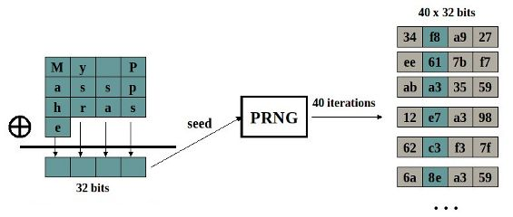
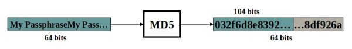

Torna alla pagina di Protocolli avanzati di rete
:: Protocolli avanzati di rete - Appunti del 25 Maggio ::
Ancora sulla sicurezza dell'802.11
Uno dei più classici attacchi al protocollo WEP è il password cracking, utilizzato sia per il recupero della chiave una volta avviato il processo di scambio tra host e access point, sia durante la fase di autenticazione delle stazioni attraverso la procedura di fiducia del challenge/response. In questo secondo caso l'attaccante potrebbe utilizzare un dizionario di password probabili e verificare che il response ottenuto sia uguale a quello inviato dalla stazione, che si presume corretto. Ovviamente siamo nell'ipotesi che l'access point continui a inviare sempre lo stesso challenge, o il cracking non servirebbe a nulla.
Prima di perderci nei vari dettagli, facciamo il punto sulle fasi del protocollo WEP:
- autenticazione: è l'access control, ovvero il momento in cui mi faccio riconoscere dalla rete. Non è obbligatoria né un prerequisito del protocollo, e proprio per questo motivo gli attaccanti preferiscono non concentrare i propri sforzi su di essa. Nel caso in cui non venga implementata, chiunque può ottenere il suo blocchetto di chiavi e comunicare, ma senza poter leggere le conversazioni altrui; è quello che dicevamo nella scorsa lezione: il WEP garantisce la privacy ma non la sicurezza
- scambio chiavi. Nel WEP originale la chiave per autenticarsi alla rete locale viene generata dal software dell'access point, ma va poi inserita manualmente sul PC in sede di configurazione. C'è la possibilità di automatizzare il tutto col Rivest, a patto però che le schede di rete supportino certi requisiti
- protezione flussi, realizzata con le tecniche di cui abbiamo già discusso e che utilizzano la concatenazione di "initialization vector + chiave"
Una variante del WEP originale è il WEP 128, dove 128 sono i bit usati per la chiave. Non è considerato uno standard, ma è stato introdotto poiché con chiavi a 64 bit bastava mezz'ora per avere buone probabilità di ricostruire i flussi di ex-or.
Esistono molti software gratuiti per la generazione di chiavi, vediamo tre cose generali che potrebbero richiedere: se si vuole crittare a 64 o 128 bit; se si vuole utilizzare una passphrase, ovvero un seme di inizializzazione della chiave; se si vuole inserire manualmente la chiave stessa.
Generazione di chiavi a 64bit

In pratica, attraverso una serie di ex-or sulla passphrase opportunamente mappata, si ottiene una stringa di 32 bit che sarà usata come seed di inizializzazione di un generatore di numeri pseudo-casuali, il PRNG. Quest'ultimo effettua 40 iterazioni del suo algoritmo, ottenendo così 40 stringhe ASCII da 32 bit, da ognuna delle quali verrà preso un byte. Si dice che il generatore è sufficientemente casuale quando la probabilità di scegliere un numero è la stessa sia che conosca quelli precedenti sia che non li conosca affatto. Il generatore del WEP non gode di questa proprietà, anche detta di massima entropia, perché non tutte le stringhe di seme hanno la stessa probabilità di essere generate, ma ce ne sono alcune per cui è molto alta ed altre per cui è praticamente nulla. La sua entropia è infatti limitata da vari fattori, tra cui ad esempio il fatto che nell'ASCII il bit di peso maggiore ha sempre valore 0; ne deriva che potremo ottenere solo seed che vanno da 00:00:00:00 a 7f:7f:7f:7f (ovviamente siamo nell'ipotesi che abbiamo utilizzato una passphrase). Non solo, sappiamo che il PRNG è uno shift register, che esegue cioè la divisione per modulo di un numero per un intero (in questo caso l'intero è il 2); degli shift register sappiamo anche che non è vero che tutti i bit hanno uguale casualità, ma quelli più bassi sono un po' meno casuali di quelli più alti. E ancora, un altro fattore che limita l'entropia del WEP a 64 bit è il fatto che prendendo un solo byte (il terzo dal basso) delle 40 chiavi generate, ne avremo alcuni la cui divisione per 2 è identica, e darà dunque lo stesso risultato. Tiriamo le somme: da 232 chiavi possibili, per i vari fattori illustrati finora si riescono ad ottenere solo 221 chiavi uniche, che non sono affatto impegnative da provare tutte.
Generazione di chiavi a 128bit

Nella versione a 128 bit del WEP non viene utilizzato lo stesso generatore di prima, ma viene seguita questa procedura:
- si fa scrivere una passphrase
- la si porta a 64 byte di lunghezza, eventualmente ripetendola
- le viene applicato l'algoritmo MD5, ovvero una funzione di hashing facile da calcolare ma molto difficile da invertire
- i primi 104 bit del risultato vengono utilizzati come chiave
Quindi le versioni a 64 e a 128 bit hanno in comune il fatto che dietro c'è sempre lo stesso concetto dello shift register, ovvero la divisione in modulo di un numero per un intero, che nel primo caso è implementata con la PRNG mentre nel secondo col più efficiente MD5.
Anche la versione a 128 bit del WEP è attaccabile, ma nemmeno lontamente così facile come per quella a 64. L'MD5 è infatti stato crackato (quindi invertito) con successo in laboratorio, utilizzando cluster di super computer che hanno lavorato su una stessa stringa per giorni; questo ci fa stare tutti tranquilli dato che è impensabile che gli hacker vogliano impegare questi tempi e mezzi per crackare una singola chiave, ma non è sufficiente per quei sistemi dove la sicurezza è un fattore più che critico (ad esempio banche dati delle forze dell'ordine o di grandi banche): il solo fatto che è stata invertita in laboratorio ci deve dissuadere dall'utilizzarla.
Immedesimandoci per un momento negli attaccanti, quale strategia dovremmo adottare per crackare il sistema? Dovremo puntare tutto sul password cracking della passphrase con un dictionary attack: si prende un generatore di passphrase (quindi un dizionario), si costruisce la chiave corrispondente e se coincide con quella esatta siamo a cavallo. Ovviamente quella esatta l'abbiamo recuperata dopo aver sniffatto un numero sufficiente di pacchetti da e per lei.
Il brute force attack su 104 bit è invece impensabile: provare tutte le combinazioni (2104) è decisamente ridicolo, a meno che non siamo IMMENSAMENTE motivati e IMMENSAMENTE attrezzati.
Introduzione all'802.16
Vogliamo finalmente allargare i nostri orizzonti passando dal wireless locale al wireless MAN (Metropolitan Area Network), quindi con estensioni a livello cittadino. Adottando il protocollo 802.11 non riusciamo a coprire grandi distanze, non tanto perché le antenne non hanno potenza sufficiente (se fosse per questo basterebbe aumentarla), ma perché sarebbe un MAC a contesa che pretende di simulare una ethernet a banda base, quindi un ambito trasmissivo comune dove bisogna garantire che ognuno riesca a sentire gli altri (problemi delle stazioni esposte/nascoste permettendo).
Il protocollo 802.16 rende wireless anche la parte di distribuzione del traffico di rete tramite gli access point, che finora avevamo sempre considerato come attaccati via cavo. Dal momento che è tutto wireless avremo enormi problemi a livello 1 (line of sight, distanze, ...), e anche di sicurezza poiché il segnale può essere intercettato da molte più persone; paradossalmente le basse potenze dell'802.11 garantivano maggior sicurezza dato che l'eventuale intercettatore doveva essere in zona per captare il traffico.
Quindi la 802.16 ha come obiettivo quello di ottenere la connessione unica, con un handover sul segnale dati (proponendosi quindi come alternativa all'HDSPA a livello cittadino) impraticabile nel protocollo 802.11, che richiederebbe la ri-autenticazione dell'host ogni volta che passa sotto la gestione di un altro access point.
La tecnologia utilizzata per realizzare una MAN è una via di mezzo tra quella a rete pubblica e privata: dalla rete pubblica abbiamo ad esempio il concetto di base station, ma poi facciamo anche collision avoidance (sia perché in ambito metropolitano la contesa non funziona, sia perché altrimenti non si riuscirebbe a fare streaming, e spiegaglielo tu a Damiani collegato in MAN che non può parlare in Skype guardandosi i video della posa dei cavi sottomarini a Tahiti su YouTube).
Torna alla pagina di Protocolli avanzati di rete